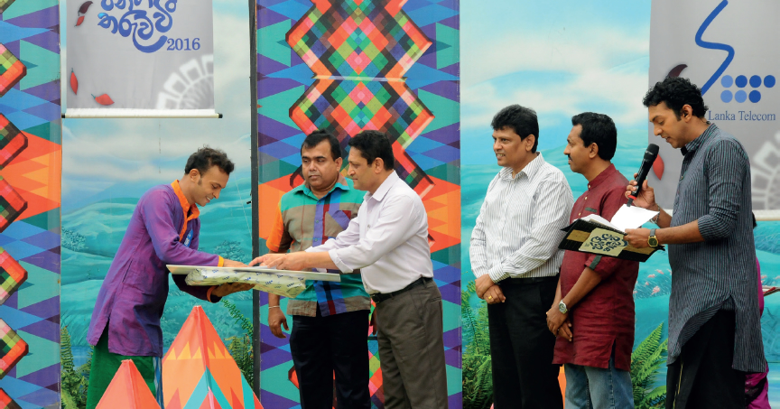
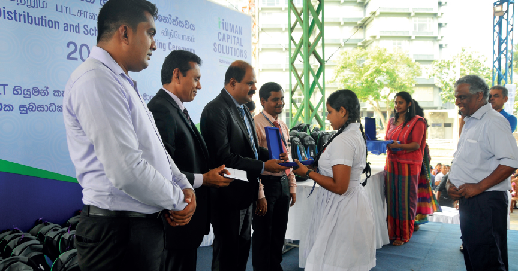
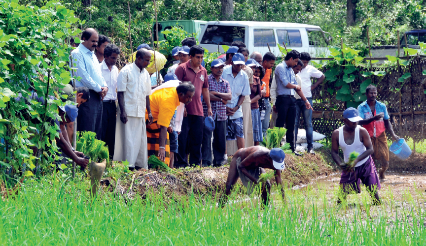

We are mindful of the environments in which we conduct our business operations. We aim to continually uplift local communities, as well as prudently manage our ecological footprint.
SLT’s Social Responsibility Policy
Our social responsibility policy aims to bring together all our corporate social responsibility (CSR) activities, optimise the utilisation of financial resources and maintain international standards for the internal processes and systems.
Outreach
Events
We organised a special event at the Public Grounds at Mahiyanganaya to celebrate World Children’s Day on October 2016.

SLT’s Annual Jana Gee Tharuwa Wee Competition 2016.
Support
We provided support to the bone marrow transplant unit at the Cancer Hospital in Maharagama; with donations of medical equipment and medicines.
Sponsorships
We were the principal sponsor of the inaugural ‘Internet Governance Forum’ in Sri Lanka; which saw the participation of industry professionals from across the Nation.
SLT was the main sponsor of the Junior National Championships 2016, held at the Mahinda Rajapakse Stadium in May. The championship was in its 17th consecutive year and attracted young and upcoming athletes from across the island.
We were the principal sponsor of the inaugural ‘Internet Governance Forum’ in Sri Lanka; which saw the participation of industry professionals from across the Nation.
Programmes
We conducted 11 Manduam Paramitha Poya Day programmes, in association with the Amadahara programme of the media network Swarnawahini, to provide school bags, stationery, medicines and fruit saplings to 1,100 deserving students.

School Material Distribution Programme by SLT Human Capital Solutions (Private) Limited.
We rewarded the high achievers of the GCE A/L examinations, by presenting them with ultra-high speed broadband connections to aid in their undergraduate studies.
Our Virusara Varaprasada programme was launched to empower veterans and their families.
To highlight awareness on ecological conservation, we launched the #LastClick campaign; the winners of which were lead on a tour to the UNESCO World Heritage Site of Sinharaja Forest Reserve.
Adverse weather conditions in the past year lead us to initiate a relief programme, to provide aid to affected individuals and families.
We introduced bespoke post-paid mobile plans for state sector employees, media personnel, Samurdhi recipients and senior citizens.
Mobitel enabled an unique feature within mCash to enable patrons to donate directly to the historic Sri Dalada Maligawa. The service is also available for Etisalat customers.
Mobitel, along with the National Dangerous Drug Control Board (NDDCB) initiated a nation-wide programme towards the reduction of substance abuse in Sri Lanka. We renovated the NDCCB call-centre and provided the organisation with an advanced digital platform for easing the handling of complaints.

Promoting Traditional Rice Cultivation as part of SLT’s Preserving Heritage for Tomorrow Initiative for 2016.
Further details on these activities and more can be accessed from our corporate website.
Launches
Mobitel introduced the ‘CHAMP’ child watch; a wrist-attached, monitoring device that can help parents track their children’s location.
We launched the Zero One Awards, an inaugural platform that serves to recognise digital excellence in Sri Lanka. Details can be accessed from www.01awards.lk
Publications
We continued our annual custom of printing and distributing a corporate calendar highlighting cultural diversity. Our 2017 calendar featured the many traditional varieties of rice that are cultivated in Sri Lanka, and which consequently form an important part of this country’s heritage. In tandem with this, we initiated a CSR project, titled ‘Ape Uruma Vee, Rata Saru Karavee’; upon which agriculturists were shown how they could use ICT to develop and further their profession.
We strive to ensure that all our products and services comply with environmental regulations, and hence minimise their effects on the environment.
Our Akaza cloud platform helps reduce carbon footprints by eliminating the need for paper-based systems and storage space.
Similarly, our e-work, e-commerce, e-health, e-learning, and e-banking conversions help minimise carbon footprints, by contributing to, amongst other factors, decreases in transport and commuting, and saving physical space.
We promote eco-friendly gift items in our gift shops; which are crafted by local artisans. This helps in contributing to their sustainable livelihoods as well as helping in the recycling of material.
Digital Initiatives
We launched an online awareness programme highlighting the importance of conserving corals in Sri Lanka. This was hosted on Facebook, in the form of a gaming application. The programme was aimed at the technologically-adept youth segment, and it was a marked success.
Employee Awareness Programmes
We launched an employee awareness programme to enlighten our staff on the importance of conserving nature, and the practices that can be implemented to further this goal.
Energy Management
We are committed to managing our energy footprint, and engaged in the following measures throughout the year.
We replaced electric geysers with solar water heaters in five circuit bungalows that are owned by us for employees’ recreational purposes. These bungalows similarly saw the installation of bio-gas plants on the premises; which eliminate the need for liquefied petroleum gas (LPG), as well as provide organic fertiliser and a handy solution for garbage disposal.
We replaced fluorescent tube lights and CFL bulbs with energy-efficient LED lighting on our premises.
We launched an experimental project to study the viability of using solar power as the main source for several service access gateways. 17 of our sites island-wide have been covered under this scheme, and we are monitoring results as they come.
Reducing Energy and Emissions
Our efforts in this sector have continued to be fruitful. We have seen a decrease in the consumption of electricity as well as fossil-fuel resources for our operations. This has positively reduced our greenhouse gas (GHG) emissions as well as contributed to reductions in incurred costs.